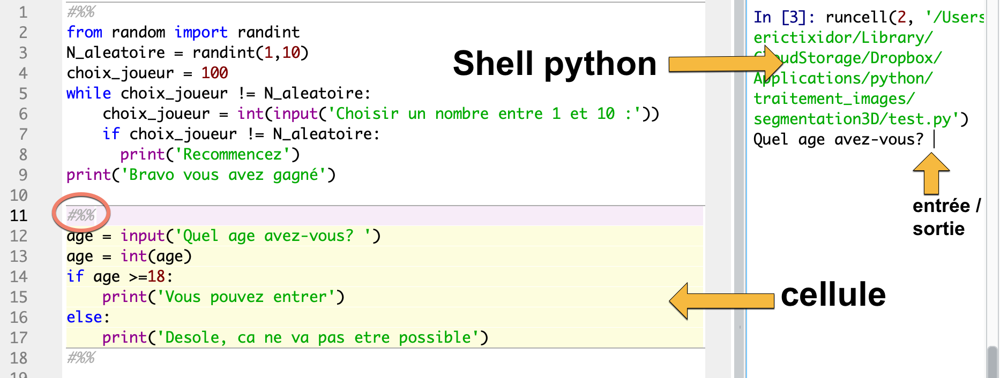
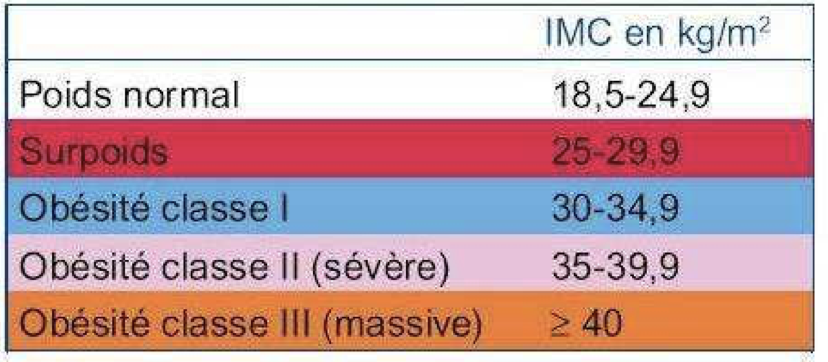

TP conditions
TP3: Structures conditionnelles
Editeur Python
Au choix, utilisez:
- un notebook.

Dans une même cellule: Saisir une ou plusieurs lignes de code Python, puis appuyer simultanement sur Majuscule(Shift) + Entrée pour executer le code.
- l’editeur Pyzo:
Mettre ## avant chaque script pour créer une cellule. Executer la cellule et passer à la suivante avec MAJ+CTRL+ENTREE.
- l’editeur Spyder:
Mettre #%% avant chaque script pour créer une cellule. Executer la cellule et passer à la suivante avec MAJ+ENTREE.

Exemple
Le programme suivant demande de renseigner votre age (à la premiere ligne), et vous laisse entrer en discothèque, seulement si vous avez plus de 18 ans. La fonction input est ce que l’on appelle une entrée. Elle permet se saisir une valeur qui sera utilisée par le programme. La valeur saisie par l’utilisateur sera TOUJOURS de type str.
Cette structure servira pour les prochains scripts.
Enoncé des exercices
Ex 1: test sur un nombre divisible
Le script suivant permet de tester la parité d’un nombre n. Saisir dans l’editeur Python le script suivant.
Tester puis adapter ce script, pour demander à l’utilisateur un entier, puis afficher si cet entier pair.
Aide: Vous devrez utiliser la fonction de conversion int pour transformer la valeur saisie par l’utilisateur en un entier: n = int(input(' ... '))
- Question a: Recopier ce nouveau programme.
Ex 2: Comparer 2 nombres
Completer (et tester avec plusieurs valeurs de a et de b) le programme suivant qui compare a et b et retourne un message selon leur ordre ou leur egalité.
- Question b: Qui a la plus grande valeur parmi
aetbaprès leelse?
Ex 3: IMC
L’Indice de Masse Corporelle (IMC) est un indicateur chiffré utilisé en médecine. L’IMC d’une personne est donné par la formule:
$$IMC = \tfrac{masse}{taille^2}$$où la masse est en kg et la taille en mètres.
Proposez un algorithme qui demande à l’utilisateur sa taille et sa masse puis qui affiche l’IMC de la personne.
Pensez à écrire un texte clair à destination de l’utilisateur pour qu’il sache quoi saisir.
Utilisez le tableau suivant pour fournir une information à la personne en fonction de son IMC:

classification de l'IMC - source: has-sante.fr
- Question e: Recopier la série d’instructions conditionnelles qui affichent une information sur l’IMC.
Ex 4: Compter les ballons
On utilise un programme pour compter le nombre de ballons touchés lors d’un jeu de fête foraine.

tir aux ballons
source image: vecteezy - Giuseppe Ramos
Lorsqu’un ballon est touché, il faut saisir “O”. Lorsque le ballon est manqué, saisir un “X”. Le jeu termine lorsque le nombre total de tirs est égal à 6.
Les variables utilisées seront:
n: compteur du nombre total de tirstouches: nombre de ballons touchésmanques: nombre de ballons manquéschoix: caractère saisi par le joueur (“O” ou “X”)
Ecrire et tester le script du programme. Afficher le score à la fin du jeu.
-
Question f: Dans votre programme, quel est le variant de boucle?
-
Question g: Supposons que l’utilisateur entre la série: “X”, “O”, “O”, “O”, “X”, “O”. Comment évoluent les différentes variables? Recopier et compléter le tableau de suivi.
n avant itération |
touches avant iteration |
manques avant iteration |
condition d’execution True/False |
choix |
|---|---|---|---|---|
- Question h: Etes-vous sûr que le programme finira, quelles que soient les entrées saisies par l’utilisateur?
Ex 5: Multiplier sans utiliser *
La multiplication de x par a revient à additionner x + x + x ... un nombre a de fois.
Par exemple, x + x + x correspond à 3 * x.
On peut alors utiliser a comme variant dans une boucle whileavec pour condition d’arrêt, a == 0.
Dans le bloc executé par la boucle, il faudra ajouter à la variable produit, la valeur de x. Et diminuer a d’une unité.
Compléter le programme afin de réaliser le produit de x par a, sans utiliser l’opérateur *.
- Question i: Précisez combien d’itérations ont lieu, en fonction de la valeur de
a.
Portfolio
- Quand faut-il utiliser
input("blabla")ouint(input("blabla"))? - A quoi sert l’indentation en python sous une instruction conditionnelle?
- Que faut-il contrôler dans une boucle non bornée (
while) pour s’assurer que celle-ci finira toujours? - Montrer qu’il est possible de déterminer le nombre d’itérations du bloc conditionnel en fonction du variant. Prenez un exemple.